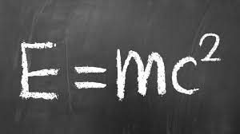
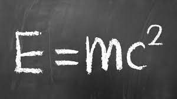
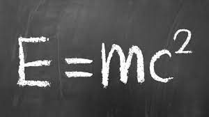
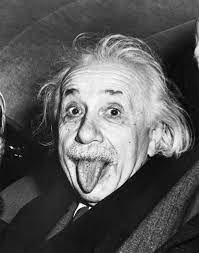

 
Nombre completo: Albert Einstein
Fecha de nacimiento: 14 de marzo de 1879
Lugar de nacimiento: Ulm, Reino de Wurtemberg, Imperio alemán
Fecha de fallecimiento: 18 de abril de 1955
Lugar de fallecimiento: Princeton, Nueva Jersey, Estados Unidos

Albert Einstein fue un físico teórico de origen alemán, conocido por ser uno de los científicos más influyentes y reconocidos del siglo XX. Sus contribuciones revolucionarias en el campo de la física y su teoría de la relatividad transformaron nuestra comprensión del universo y sentaron las bases de la física moderna.
Einstein nació en Ulm, en el Reino de Wurtemberg del Imperio alemán. Desde joven, mostró un gran interés y talento por la ciencia y las matemáticas. Después de completar sus estudios secundarios, ingresó en el Politécnico de Zurich, donde se graduó en 1900 como profesor de física y matemáticas.
En 1905, a la edad de 26 años, Einstein publicó cuatro artículos en la revista Annalen der Physik, que se convertirían en la base de la física moderna. Estos artículos abordaron el efecto fotoeléctrico, el movimiento browniano, la teoría especial de la relatividad y la equivalencia masa-energía (expresada en su famosa fórmula E=mc²). Estos trabajos le valieron reconocimiento y establecieron su reputación como un genio científico.
En 1915, Einstein presentó la teoría de la relatividad general, que extendió y generalizó su teoría especial de la relatividad. La relatividad general propone una nueva comprensión de la gravedad, donde la curvatura del espacio y el tiempo es causada por la presencia de masa y energía. Esta teoría fue confirmada posteriormente por observaciones y experimentos, lo que consolidó la posición de Einstein como uno de los científicos más destacados de la historia.
Durante los años siguientes, Einstein continuó trabajando en diversas ramas de la física teórica y realizó contribuciones significativas en campos como la teoría cuántica, la estadística y la cosmología. También fue un defensor activo de los derechos civiles y la paz, y utilizó su voz y su posición para abogar por la justicia social y la resolución pacífica de los conflictos.
En 1921, Einstein recibió el Premio Nobel de Física por su explicación del efecto fotoeléctrico, pero no por su teoría de la relatividad, ya que en ese momento no había pruebas suficientes para respaldarla experimentalmente.
En 1933, con el ascenso del régimen nazi en Alemania, Einstein, quien era de ascendencia judía, emigró a los Estados Unidos. Aceptó una posición en el Instituto de Estudios Avanzados en Princeton, donde continuó sus investigaciones y enseñó hasta el final de su carrera.
Albert Einstein falleció el 18 de abril de 1955 en Princeton, Nueva Jersey, dejando un legado duradero en la ciencia y la humanidad. Su genialidad y su visión revolucionaria del mundo continúan inspirando a científicos y personas de todo el mundo hasta el día de hoy.

1. Einstein tenía dificultades para hablar cuando era niño: Hasta los nueve años de edad, Einstein tuvo problemas para pronunciar palabras correctamente, lo que llevó a algunos a pensar que podría tener problemas de aprendizaje. Sin embargo, más tarde demostró tener una mente brillante y una capacidad excepcional para la física y las matemáticas.
2. Era un apasionado músico: Además de ser un genio en la física, Einstein también era un talentoso violinista. Aprendió a tocar el violín a una edad temprana y a lo largo de su vida disfrutó de la música, a veces incluso tocando en conciertos con otros músicos profesionales.
3. Rechazó la presidencia de Israel: Después de la muerte del primer presidente de Israel, Chaim Weizmann, en 1952, se le ofreció a Einstein el cargo de presidente del país. Sin embargo, él declinó amablemente la oferta, afirmando que carecía de las habilidades y cualidades necesarias para desempeñar ese papel.
4. Tenía una mente distraída: Einstein era conocido por su aspecto desaliñado y su cabello desordenado. Además, a menudo se le atribuye la cita humorística: "Dos cosas son infinitas: el universo y la estupidez humana; y no estoy seguro sobre el universo". Aunque no está claro si realmente dijo esto, refleja su sentido del humor y su forma de pensar fuera de lo convencional.
5. Renunció a su ciudadanía alemana: En 1896, Einstein renunció a su ciudadanía alemana para evitar el servicio militar obligatorio. Después de eso, vivió en diferentes países, incluidos Suiza, Italia, Austria y finalmente emigró a los Estados Unidos en 1933.
6. Se le ofreció la presidencia honoraria de Israel: Aunque Einstein rechazó el cargo de presidente de Israel, en 1952 se le ofreció la presidencia honoraria del país. Aceptó con gratitud este título simbólico y fue una figura muy respetada en la comunidad científica de Israel.
7. Era un pacifista comprometido: Después de presenciar los horrores de la Primera Guerra Mundial, Einstein se convirtió en un firme defensor de la paz. Abogó por el desarme nuclear, se pronunció en contra de las armas nucleares y participó activamente en movimientos pacifistas.
Estos son solo algunos datos curiosos sobre Albert Einstein que resaltan diferentes aspectos de su vida y personalidad.
Esa es la vida de nuestro querido Albert
Obras y descubrimientos de Albert Einstein